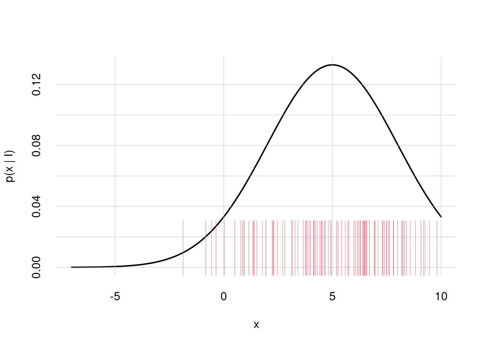
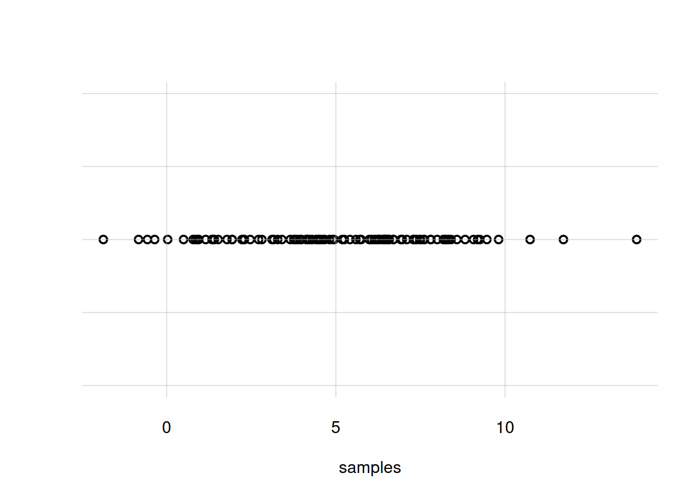
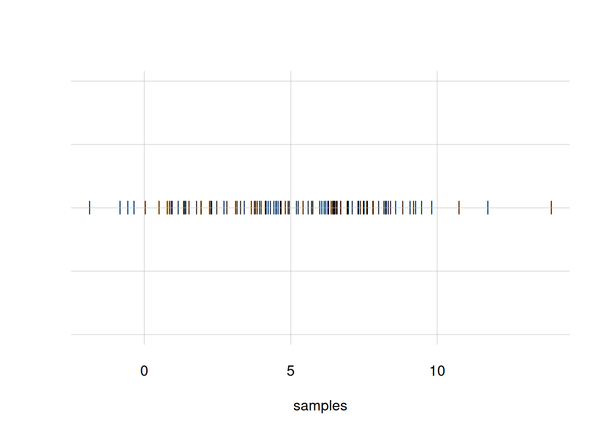
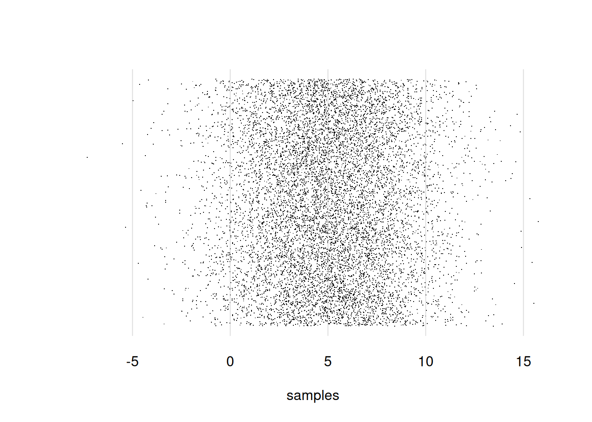

a <- c(1, 2, 3, 4, 5, 6)
b <- c(0.05, 0.3, 0.4, 0.2, 0.03, 0.02)
plot(x = a, y = b)Working with R, II
\(\DeclarePairedDelimiter{\set}{\{}{\}}\) \(\DeclarePairedDelimiter{\abs}{\lvert}{\rvert}\)
R has a wide range of basic plotting functions, and in addition to them there are many plotting libraries. Here we shall see examples of how to create the kinds of plot discussed in chapter 14 Probability distributions, using basic R functions and custom functions used in these notes.
Plotting pairs of values in R
A very simple kind of plot is the one where we plot a sequence of values against another sequence of the same length, interpreting the first as x-axis and the second as y-axis. This can be done with the base R function plot(). Here we consider sequences a and b, with six values each:
You notice that the names of the variables appear automatically on the axes, and the pairs of points are represented by small, empty circles. If we want to join the points with lines we can use the type = 'l' argument; with type = 'b' we get both circles and lines. The line width is controlled by the lwd = argument, and the line type (solid, dashed, dotted, and so on) by the lty = argument. The colour by col =. We can also change the axes’ labels with xlab = and ylab =, and the ranges of the two axes with xlim = and ylim =. Let’s see two examples:
plot(x = a, y = b,
type = 'l',
lwd = 1, lty = 1, col = 1,
xlab = 'quantity A', ylab = 'quantity B',
xlim = c(-3, 7), ylim = c(-1, 1))plot(x = a, y = b,
type = 'b',
lwd = 3, lty = 2, col = 2,
xlab = 'quantity A', ylab = 'quantity B',
xlim = c(0.5, 6.5), ylim = c(0, 0.5))Note that the sum of b values is 1:
sum(b)[1] 1so b could be a discrete probability distribution for the quantity a.
A custom plot function
If the quantity a is non-numeric, for instance a sequence of character strings, then we must first somehow convert it to numbers in order to use plot(), otherwise we get an error.
In these notes we use the custom function flexiplot(), which takes care of such conversions internally. We can load it from the file tplotfunctions.R, which you should have already downloaded:
source('tplotfunctions.R')Consider a quantity animal that could be one of six possible animals, and the distribution of probability over them, assigned to a variable prob. With flexiplot() we can plot the probability distribution as follows:
animal <- c('cat', 'dog', 'chicken', 'cow', 'pig', 'horse')
prob1 <- c(0.05, 0.3, 0.4, 0.2, 0.03, 0.02)
flexiplot(x = animal, y = prob1, type = 'b', ylim = c(0, NA))Note how the animal names appear in the x-axis, in the order specified. The range specification ylim = c(0, NA) (not available for plot()) says that the lower range should be \(0\), and the upper range should be the maximum available among the y-axis values.
Suppose we need to plot two different probability distributions (or two different sets of y-values more generally), stored in the variables prob1 and prob2, for the same x-values, as in the last plot of § Discrete probability distributions. We can do this by column-binding them together into an array with two columns with the cbind() function, and then giving this array as the y = argument:
prob2 <- c(0.2, 0.6, 0.05, 0.04, 0.01, 0.1)
flexiplot(x = animal, y = cbind(prob1, prob2),
type = 'b', ylim = c(0, NA),
ylab = 'two probability distributions')We could also issue two separate flexiplot() commands, giving the argument add = TRUE to the second. But in this case we must make sure to give the correct y-range already in the first plot, and we must also explicitly use different colours col = and line types lty =. Check for instance what would happen for the case above:
## Plot for prob1
flexiplot(x = animal, y = prob1,
type = 'b', ylim = c(0, NA),
ylab = 'two probability distributions')
## Plot for prob2
flexiplot(x = animal, y = prob2,
type = 'b', col = 2, lty = 2,
add = TRUE)You see that the curve in the second plot was partly cut off, because the first plot adapted the y-range to the first curve only.
Plotting probability densities in R
If \(X\) is a continuous quantity, we know the mathematical formula for a probability density over its domain, then the density can be plotted as pairs of values, as we did above. We need to generate many values of \(X\) in the range of interest, and calculate the probability density for each from the mathematical formula.
Suppose for instance that \(X\) has all real numbers as its domain, and probability density \(\mathrm{p}(X\nonscript\:\vert\nonscript\:\mathopen{}I)\) given by a Gaussian, or “normal”, distribution with mean \(5\) and standard deviation \(3\). Its mathematical formula is
\[ \mathrm{p}(X\mathclose{}\mathord{\nonscript\mkern 0mu\textrm{\small=}\nonscript\mkern 0mu}\mathopen{}x \nonscript\:\vert\nonscript\:\mathopen{} I) = \frac{1}{\sqrt{2\pi\cdot 3^2}}\, \exp\biggl[ -\frac{(x - 5)^2}{2\cdot 3^2} \biggr]\,. \]
We’d like to visualize this probability density between \(X\mathclose{}\mathord{\nonscript\mkern 0mu\textrm{\small=}\nonscript\mkern 0mu}\mathopen{}-7\) and \(X\mathclose{}\mathord{\nonscript\mkern 0mu\textrm{\small=}\nonscript\mkern 0mu}\mathopen{}10\). Then we proceed as follows:
Generate a large number of values, say hundreds, for \(X\) from \(-5\) to \(10\). The number of values to generate depends on the resolution at which the final plot will be shown.
In this example we’ll generate 257 values using the function
seq()with argumentlength =, and store them in the variablex.Calculate the probability density for each \(X\) value generated. In R this is often easy, as we can give the whole sequence of numbers to a mathematical function.
In R, the formula for the Gaussian distribution is given by the function
dnorm()with argumentsmean =andsd =.Plot the pairs of values generated.
x <- seq(from = -7, to = 10, length = 257)
p <- dnorm(x, mean = 5, sd = 3)
flexiplot(x = x, y = p, ylim = c(0, NA), ylab = 'p(x | I)')If we need to display more densities in the same plot we can proceed as described in the previous section.
R has built-in functions for many common probability densities; they all have the form d...(), take a look at the index. Packages like extraDistr provide even more densities.
1D scatter plots in R
What if we want to represent a probability density as a scatter plot, as was done in § Representation of probability densities?
First of all we need to generate sample points that reflect the probability density. R has built-in functions to generate sample points for many common densities; they have the form r...() corresponding to the d...() one. For instance, to generate 100 points from a Gaussian density we can use rnorm() with arguments n = for the number of points, and mean =, sd = for the mean and standard deviation. Packages like extraDistr also provide point generators.
How many sample points should we generate? The answer is heavily context- and problem-dependent. Too few points, say a dozen, may not give any clear idea of the density. Too many, say thousands, may end up producing a compact blob where no density differences are discernible. It also depends on the structure of the probability density itself. Around a 100 sample points or so may be a good starting point. But if you need to explore regions of the domain where the probability density is low, then you’ll need more points.
Let’s generate 100 sample points for the Gaussian density of the previous example, storing them in the samples variable:
samples <- rnorm(n = 100, mean = 5, sd = 3)Then we need to display these points in a graph.
R has the built-in function rug() to display the sample points as thin vertical lines on the x-axis. The argument ticksize = specifies the length of these lines: 1 means the whole plot’s height, 0.5 half the plot’s height, and so on. You can also choose colour and line type and width with the usual col =, lty =, lwd = arguments.
Let’s use this function to add to the previous plot the sample points we just generated (we also redraw the plot):
## Redraw the plot
flexiplot(x = x, y = p, ylim = c(0, NA), ylab = 'p(x | I)')
rug(samples, ticksize = 0.25, col = 2)Warning in rug(samples, ticksize = 0.25, col = 2): some values will be
clipped
Our custom function flexiplot() can also draw 1D scatter plots. In the present example, we simply need to give it the sample points as the x = argument alone:
flexiplot(x = samples)
You notice that the density around \(X\mathclose{}\mathord{\nonscript\mkern 0mu\textrm{\small=}\nonscript\mkern 0mu}\mathopen{}5\) is not very clear; there are too many overlapping circles. We can use small bars instead, with the argument pch = '|':
flexiplot(x = samples, pch = '|')
Still another alternative is to generate many sample points and represent them as a cloud of dots, which also extends in the y-direction. This is done by using the arguments pch = '.' and yjitter = TRUE. Let’s first generate 10 000 sample points and then plot them this way:
## generate new sample points
samples <- rnorm(n = 10000, mean = 5, sd = 3)
flexiplot(x = samples, pch = '.', yjitter = TRUE)
Finally, let’s suppose we want two visualize and compare two different probability densities for \(X\): the Gaussian distribution from before, and a Cauchy distribution. We can do this by generating sample points for both, and then plot them together with flexiplot() as discussed above.
First let’s generate 10 000 samples from the Cauchy distribution. In R this is done with the function rcauchy(), with arguments n =, location =, and scale =. The location and scale determine where the centre of the distribution is located, and how wide it is; we can for instance choose a location equal to \(5\), as for the Gaussian, and scale equal to \(1\):
samplescauchy <- rcauchy(n = 10000, location = 5, scale = 1)Now we plot them together, displaying only the range from \(X\mathclose{}\mathord{\nonscript\mkern 0mu\textrm{\small=}\nonscript\mkern 0mu}\mathopen{}-10\) to \(X\mathclose{}\mathord{\nonscript\mkern 0mu\textrm{\small=}\nonscript\mkern 0mu}\mathopen{}10\). We add labels for the two distributions as y = arguments. For both x = and y = argument we use cbind(). Let’s also add some nicer x- and y-labels:
flexiplot(
x = cbind(samples, samplescauchy),
y = cbind('Gaussian', 'Cauchy'),
pch = '.', yjitter = TRUE,
xlab = 'x', ylab = 'densities',
xlim = c(-10, 10)
)